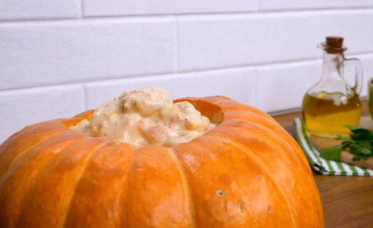
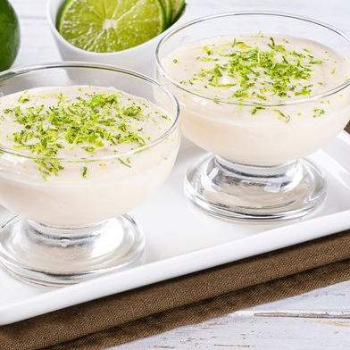

| Tempo |
Porção |
Tipo |
| 90 min |
6 porçoes |
Frutos do Mar |
- Ingredientes
- Camarão
- Azeite
- Alho
- Cebola
- Tomate sem sementes
- Sal e Pimenta-do-reino
- Creme de leite s/ soro
- Requeijão cremos
- Moranga
- Cheiro-verde
- Ketchup
Modo de Preparo
- Retire a tampa e as sementes da moranga.
- Lave e enrole-a em papel alumínio e leve ao forno médio (180° C) por 45 minutos.
- Em uma panela, aqueça o azeite e refogue o alho e a cebola, junte o camarão e deixe cozinhar por 5 minutos.
- Adicione os tomates picados, a pimenta, o sal e o ketchup.
- Desligue o fogo e acrescente o creme de leite e o cheiro-verde.
- Misture bem e adicione por último o requeijão.
- Passe um pouco de requeijão no interior da moranga e despeje o creme de camarão.

| Tempo |
Porção |
Tipo |
| 30 min |
8 porçoes |
Molho |
- Ingredientes
- Cebola pequena
- Margarina
- Creme de leite
- Leite
- Amido de milho
- Queijo parmesão ralado
- Pimenta-do-reino
- Sal
Modo de Preparo
- Em uma panela, derreta a margarina e acrescente a cebola, o sal e a pimenta-do-reino.
- Quando a cebola estiver bem transparente, acrescente o creme de leite e misture.
- Dissolva o amido no leite e adicione ao molho.
- Quando o molho estiver com uma consistência firme, desligue o fogo e acrescente o queijo, mexendo bem, para ele não grudar.
- Sirva com macarrão ou arroz de forno.

| Tempo |
Porção |
Tipo |
| 10 min |
10 porçoes |
Doces |
- Ingredientes
- Leite condensado
- Creme de Leite
- Suco de limão
Modo de Preparo
- Coloque no liquidificador o creme de leite (com soro mesmo) e o leite condensado.
- Bata um pouco e depois vá acrescentando o suco do limão, aos poucos.
- Ele vai ficar bem consistente, leve à geladeira.